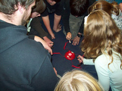
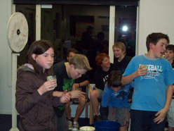
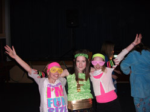

One of my primary roles has been co-ordinating and running the Dynamyte Youth Group, which is a Friday night youth group for years 7 & 8. It runs for an hour and a half and consists of activities followed by a small talk based around values and the gospel. We then share supper. This program has been designed so that the leaders can have an initial contact with a young person for relationships to be built.
One of my primary roles has been co-ordinating and running the Dynamyte Youth Group, which is a Friday night youth group for years 7 & 8. It runs for an hour and a half and consists of activities followed by a small talk based around values and the gospel. We then share supper. This program has been designed so that the leaders can have an initial contact with a young person for relationships to be built.
The program was not an easy one to run as I had little support from parents and there was no readily available material for discussions that I could find. I also had issues dealing with Christian kids' parents when I was expanding the focus of Dynamyte to be more inclusive of community kids that were referred to the program from the school. This was a hard process to work through and made me question my ability as a leader because parents were going behind my back to complain about issues. After much reflection and supervison, I decided to ignore the complaints of those parents which meant some of those kids did not come back to the program. I hope that in the future with some more follow-up, those parents can feel ok about the decisions. It would have been easier if there was a clear aim for the program expressed to parents at the begining of the year.
I have learnt heaps from the process of running this group. I know now that I would not even start a program without the commited backing of at least two sets of parents. I have learnt that for this to happen I need to ask for help and approach parents. I have also put in place, for the person who takes over from me, a process of support so that they do not have to go through the same frustrations in trying to start a program that I have. I have also left a brief, which contains a vision and goal that could work with Dynamyte next year: Commitment to being a place where community kids can come and be part of a community, whilst leading up to a major camp in the fourth term. Community kids needed to be an expressed aim of the youth group.
 I think the two biggest lessons I have learnt with the frustrations in running this group is that just because someone is capable (that was the language used to describe me when entering the internship) that does not make them experienced. I would have liked more insight into starting the group and will make sure the next intern gets that insight. I also learnt that you cannot give every young person your full attention, you can only really have quality relationships with one or two young people and you just have to hope that your genuineness and warmth will help with the other young people's inclusion in the group.